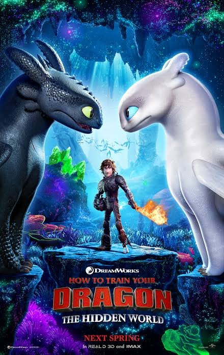
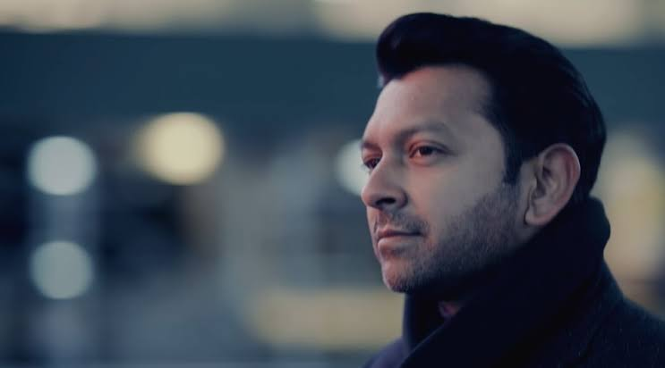
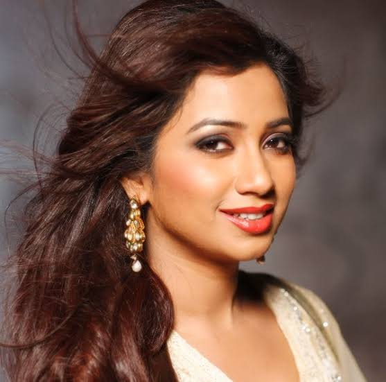
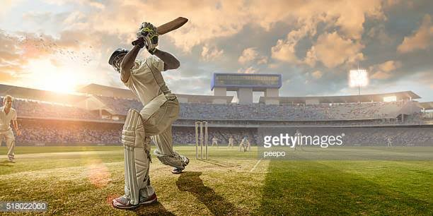
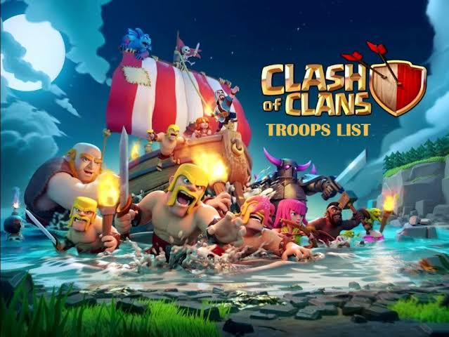
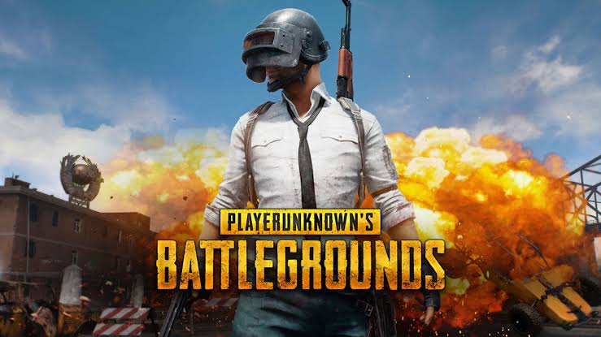
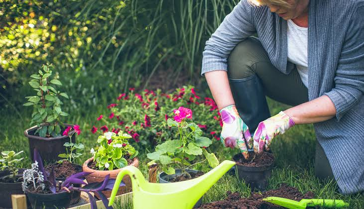

Hobbies and Activities
Favourite books
Cinderella

Cinderella is a folk tale embodying a myth-element of unjust oppression and triumphant reward. Thousands of variants are known throughout the world. This is my most favourite story book
Hercules

Hercules is a Roman hero and god. He was the Roman equivalent of the Greek divine hero Heracles, who was the son of Zeus and the mortal Alcmene. This is also one of my faourite story book
Favourite Movies
Baby's Day Out

Baby's Day Out is a funny movie. It is my most favourite movie. It was written by John. Hughes and directed By Patrik Read Johnson.
How To Train Your Dragon Series

How To Train Your Dragon movie is also my favourite movies. It is actually a series, and it have already 3 series. This movie was created by Cressia Cowell. This is an animation movie, and this movie is owned by Green Work Animation.
Favourite Artist
Atif Aslam
Atif Aslam is my most favourite singer. He is a Pakistani citizen. His voice is too good.
Tahsan Khan

Tahsan khan is a multi talented person. He is Bangladeshi. He is a actress, Singer and a lecturer. He is very talented guy. His song also too good.
Shreya Ghoshal

Shreya Ghoshal is an Indian. Her tone is so cute. She can sings in hindi and bangla. She is also my favourite artist.
Favourite Sport
Cricket

Cricket is my most favourite sports. I play cricket everyday. Cricket is a have manys rules. It is a world famous sports.
Football
Football is also my favourite sports. I also play football. Football is the world most famous sports. It is called beautifull game.
Badminton

Badminton is also my favourite sports. I play badminton in winter season. It also a world famous game.
Favourite Game
Clash of Clans

Clash of clans is a world famous game. Once it was a number 1 game in the world. It is my most favourite game.
Playerunknown's Battlegrounds(PUBG)

PUBG is also my favourite game. PUBG is an online multiplayer battle royale game developed and published by PUBG Corporation, a subsidiary of South Korean video game company Bluehole. Now it is world number 1 game.
Favourite Hobbies
Gardennig

Gardennig is my most fovourite hobbies. Many people have the hobby of gardening. Many young and old people are fond of gardening. Everyone can make a garden in the vacant places near his house. To make a garden one has to work hard. He has to collect seeds or saplings. Every morning and afternoon he has to give water in the plants, loosen the soil and use pesticides when the plants are attacked by insects. A flower garden gives one the greatest pleasure. When various flowers bloom, the gardener’s joy knows no bounds. A vegetable garden helps a man financially. Gardening gives a man ever joy. Everyone should make a garden for pleasure.
Coding
I want to be a good computer engineer. I love coding. Everyday i am trying to developed my coding skills. Coding is my hobby also.
Go to page 1